About B.Click B.Click について
B.Click is a free web app for guitar practice.
- Metronome
- Guitar Tuner
- Rhythm Score
- Chord Diagram
All in one place.
B.Click はギター練習のための無料 Web アプリです。
- メトロノーム
- ギターチューナー
- リズム譜
- コード表示
をひとつにまとめています。
Metronome(Click) メトロノーム（クリック）
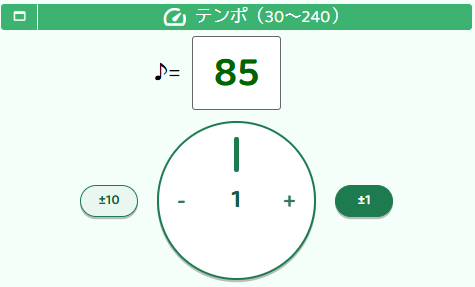
Turn the tempo dial left or right to adjust the BPM intuitively.
You can also tap the dial a few times to set the tempo with tap tempo.
Customize the click by turning off beats you want to skip, or changing the sound of beats you want to emphasize.
The count-in before you start playing is also adjustable.
テンポダイアルを左右に回す操作で、アップダウンを直感的に操作できます。
タップテンポ機能があり、テンポダイアルを数回タップしてBPMを設定することもできます。
練習中にリズムがズレがちな拍だけ強調したり、拍をOFFや音を変えるなど、クリックをカスタマイズできます。
弾き始める時の「1、2、3、4」も変更できます。
Guitar Tuner ギターチューナー
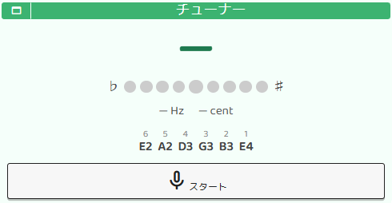
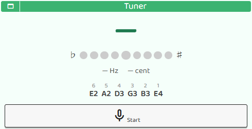
A basic tuner is built right in.
Your smartphone or PC mic is all you need — no separate tuner required.
Get in tune quickly and get straight to practice.
基本的なチューナー機能があります。
スマホやPCがあれば、マイクから音を拾ってチューニング可能です。
練習の準備をスムーズに始められます。
Metronome + Rhythm Score: Stroke Practice メトロノームとリズム譜とストローク練習
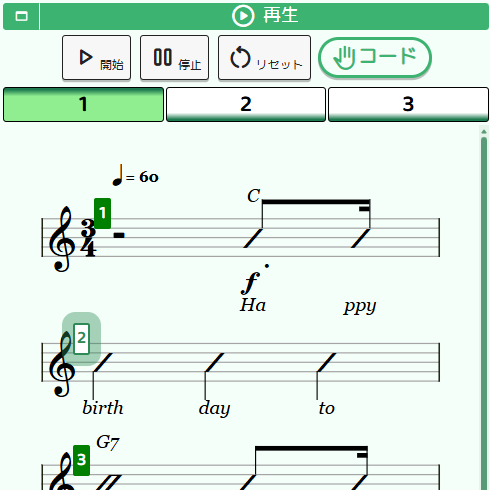
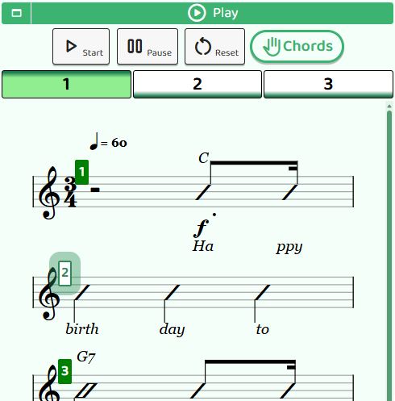
Listen to the metronome click at your set tempo while reading the rhythm score and practicing your strumming.
The highlighted bar number changes with each beat — if you lose your place, just pick it back up from the start of that bar.
Save your rhythm scores as PDF files — great for storing practice sessions, printing to share, or opening on another device.
設定したテンポのメトロノーム・クリックを聞きながら、リズム譜を見てストローク練習が可能です。
テンポの切り替わりと共に、強調される小節番号が変化します。リズムを見失ったときは、小節の先頭からリズムを取り直してみましょう。
リズム譜はPDFで保存できるので、練習ごとに保存したり、印刷して誰かに渡したり、スマホからPCへ別のデバイスで表示したり、などで使えます。
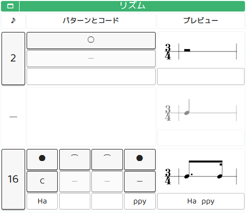
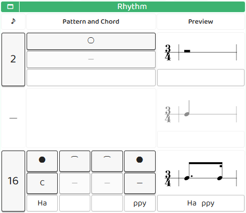
Each bar supports individual operations: edit, copy, duplicate, paste, and delete.
In the bar editor, you can choose chords, set notes and ties, and add lyrics or text to individual notes.
リズム譜は、小節ごとの操作（編集・コピー・複製・貼付・削除）ができます。
小節の「編集」では、コードの選択や音符やタイの設定、音符ごとの文字・歌詞の入力などができます。
Chord Diagram コード表示
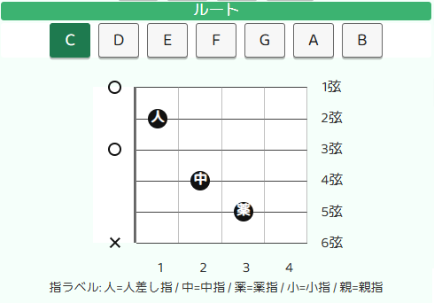
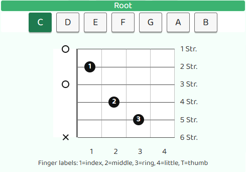
Check how to finger basic guitar chords. 基本的なコードの抑え方を確認できます。
Guide ガイド
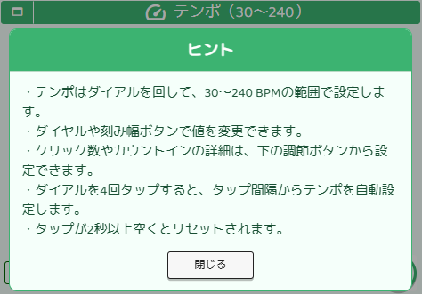
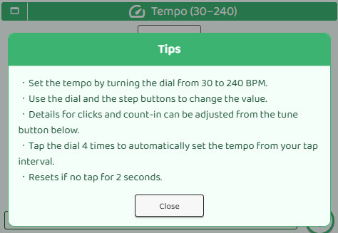
Tap the guide button ( ) whenever you need help — a quick explanation will appear for that section. 操作に困ったときはガイドボタン（ ）を選択すると、操作説明が出てきます。
About the developer 作者について
Tatsu / Living in Japan, past the guitar beginner stage.
While practicing guitar, I started wishing I had a metronome, a tuner, and a score all in one place.
That's what led me to build B.Click. (That said, a paper score filled with your own notes is still something special.)
Play daily, play better — may your guitar always be by your side.
タツ / 日本在住、脱ギター初心者。
ギターを練習しているうちに、メトロノーム・チューナー・譜面が、まとまっていればいいのにと思うようになりました。
練習に必要なものを一つに、と思い B.Click を作りました。（とはいえ好きに書き込んだ紙の譜面も大切なものです。）
毎日弾いて、もう少し上手く。あなたの隣にギターがいつも居ますように。